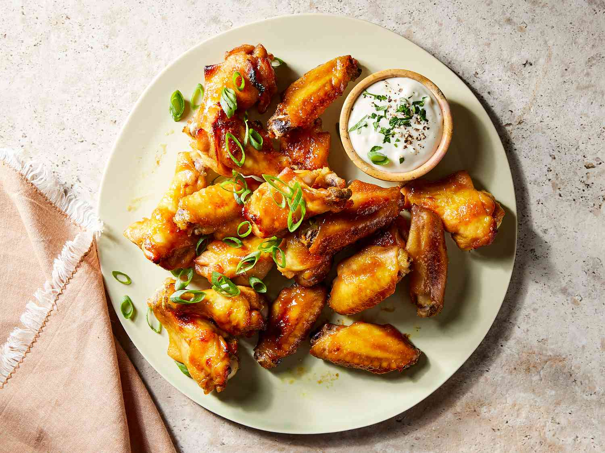

Home
(Soon to be) Chinese Soy Chicken
In the meantime, you get this beautiful western-style soy chicken recipe by the lovely Rebecca O-hingham, MA for now

PHOTO: DOTDASH MEREDITH FOOD STUDIOS
This easy chicken wings recipe makes surprisingly delicious baked wings considering how few ingredients are involved. I made it for the first time at a football party, and everyone ate all 5 pounds of wings within 10 minutes. It is the best recipe you'll find!
Ingredients
For 10 servings
- 2 cups brown sugar
- 1 cup yellow mustard
- ¼ cup soy sauce
- 5 pounds chicken wings, cut into thirds and tips discarded
Steps
- Mix brown sugar, mustard, and soy sauce together in a bowl. Transfer 1/4 cup to a small bowl for basting; cover and refrigerate until needed.
- Pour remaining marinade into a resealable bag. Add wings, coat with marinade, squeeze out excess air, and seal the bag. Marinate in the refrigerator for at least 2 hours, or overnight.
- When ready to cook, preheat the oven to 375 degrees F (190 degrees C). Line a baking sheet with aluminum foil. Remove wings from the marinade, shake off any excess, and transfer them to the prepared baking sheet. Discard the remaining marinade.
- Bake in the preheated oven for 30 minutes. Baste wings with reserved marinade, then continue to cook, basting every 10 minutes, until chicken is no longer pink at the bone and the juices run clear, about 30 more minutes. An instant-read thermometer inserted near the bone should read at least 165 degrees F (74 degrees C).
Source: All Recipes: Amazing and Easy Chicken Wings